output maintenance gif permanent green
output-maintenance-gif-permanent-green.jpg

Branch: claude/branch-review-opz967
Core implementation: 24af880c · 2026-11-07
All fixtures are disposable and synthetic. Program shows actual advancing video. Editor checkerboards and guides are authoring aids. The initial parity attempt had a missing capture directory; its logs are retained and the clean repeat passed.
The isolated HLS run has zero channel ERROR entries and proves animated GIFs, scheduled text/window ownership, overlapping logo leases and fade. Physical desktop/device output, a long soak and remote CI execution are not claimed.
See graphics-maintenance.md for ownership, extension recipes and consulted official references; README.md links all metrics, health samples, logs and screenshot sources.
maintenance-composer-checkerboard-phone-pt-BR.jpg
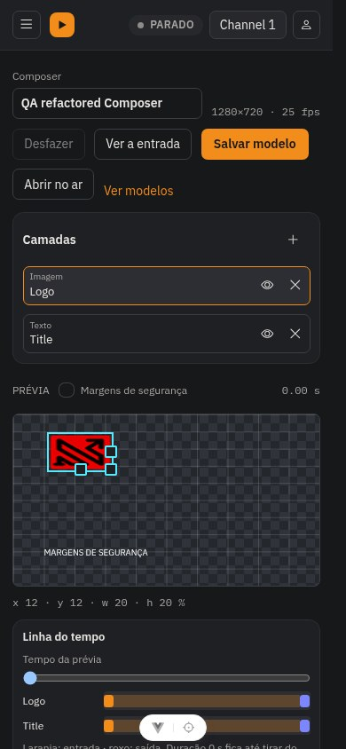
maintenance-composer-checkerboard-pt-BR.jpg
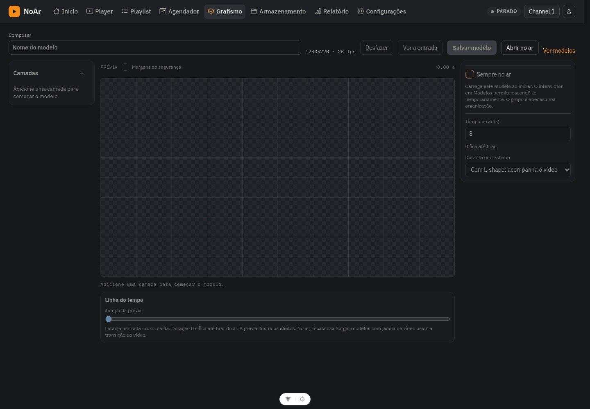
maintenance-composer-safety-margins-over-artwork-pt-BR.jpg
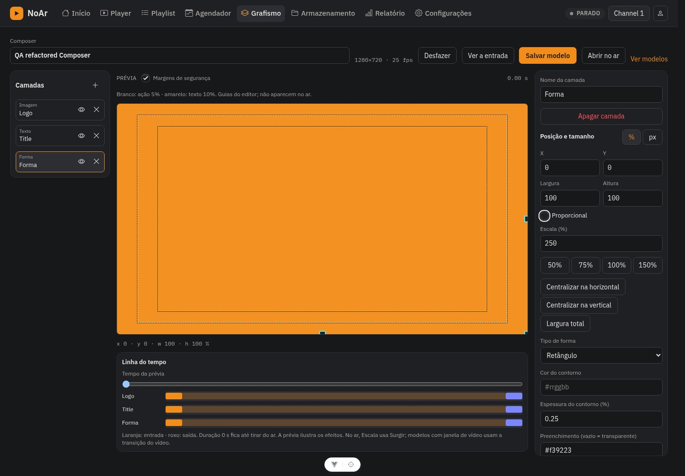
maintenance-composer-safety-margins-phone-pt-BR.jpg
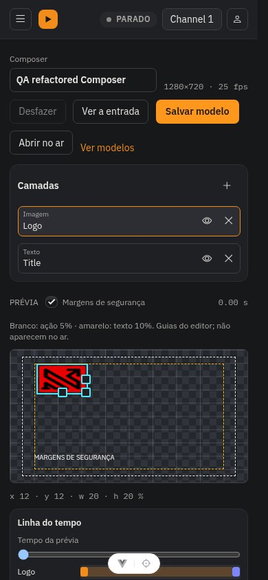
maintenance-composer-safety-margins-pt-BR.jpg
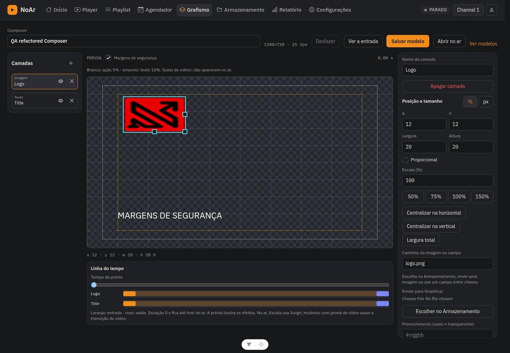
maintenance-control-api-phone-pt-BR.jpg
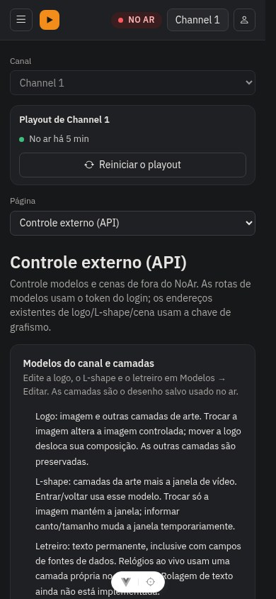
maintenance-control-api-pt-BR.jpg
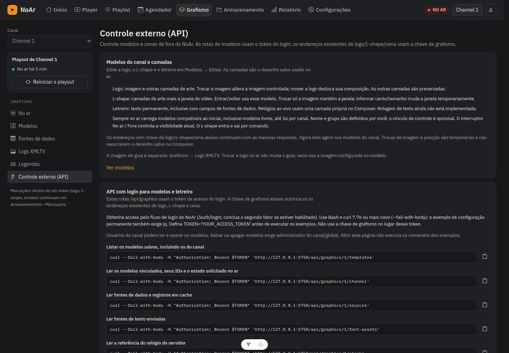
maintenance-parity-review.jpg
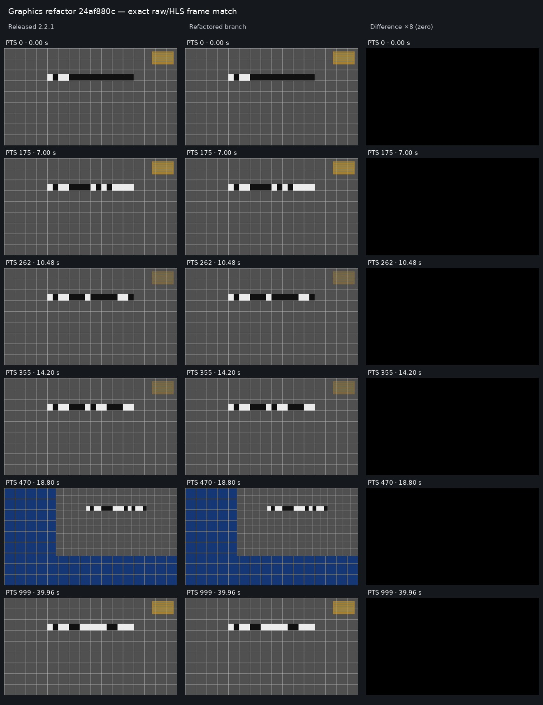
maintenance-program-phone-pt-BR.jpg
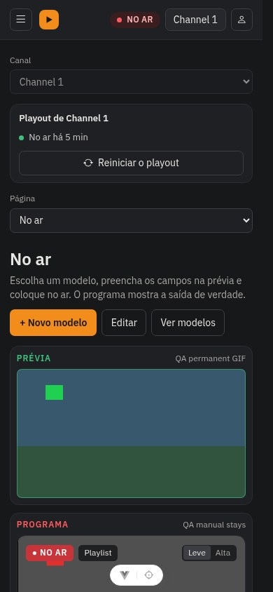
maintenance-program-pt-BR.jpg
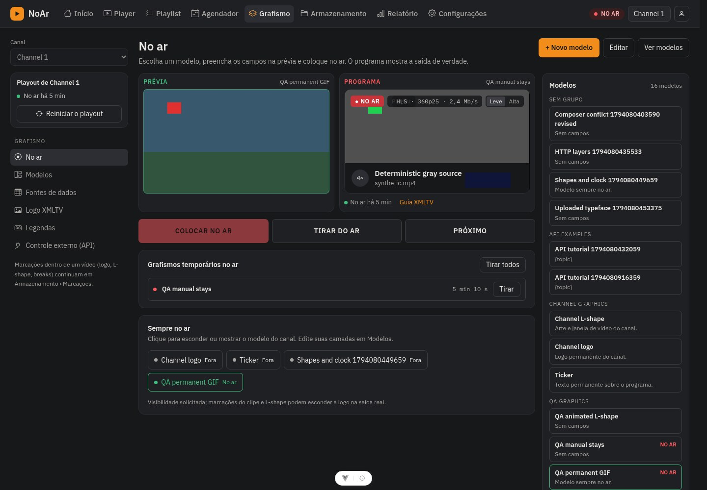
maintenance-subtitles-phone-pt-BR.jpg
maintenance-subtitles-pt-BR.jpg
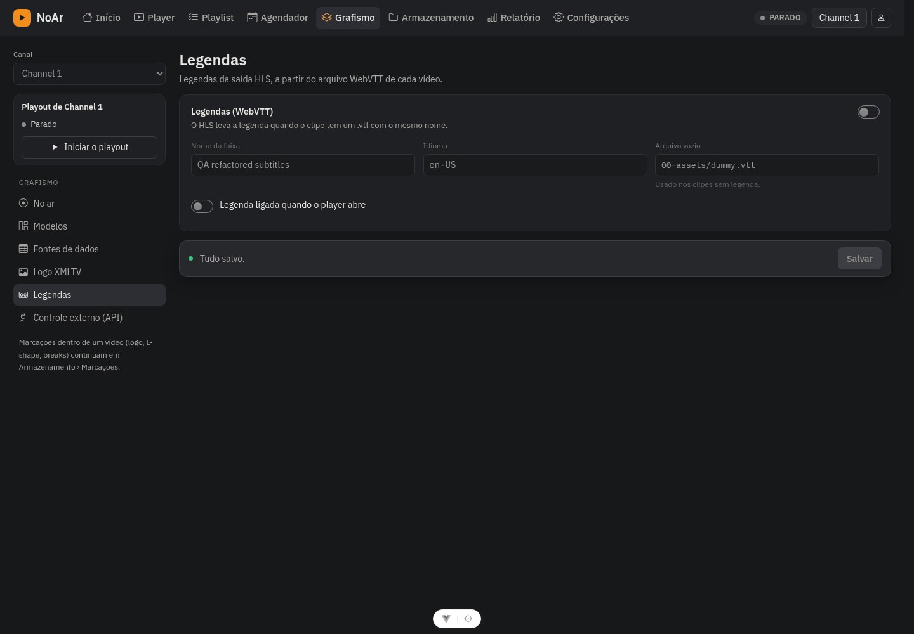
output-maintenance-gif-permanent-green.jpg
output-maintenance-gif-permanent-red.jpg

output-maintenance-gif-permanent.jpg
output-maintenance-scheduled-animated-lshape-off.jpg

output-maintenance-scheduled-animated-lshape-on-green.jpg
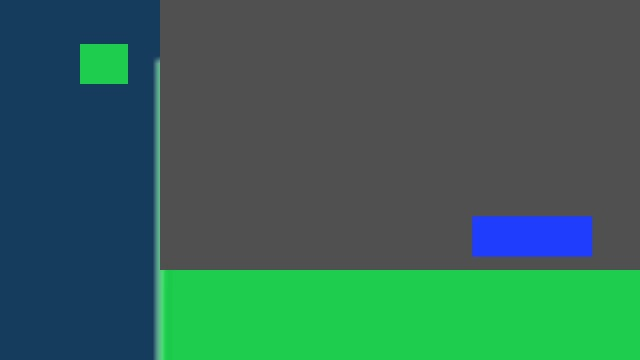
output-maintenance-scheduled-animated-lshape-on-red.jpg
output-maintenance-scheduled-animated-lshape-on.jpg

output-maintenance-scheduled-gif-off.jpg

output-maintenance-scheduled-gif-on-green.jpg

output-maintenance-scheduled-gif-on-red.jpg
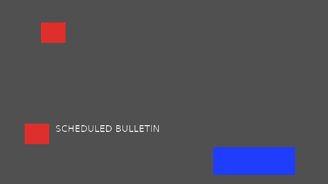
output-maintenance-scheduled-gif-on.jpg

output-maintenance-scheduled-logo-fade-in.jpg
output-maintenance-scheduled-logo-fade-out.jpg
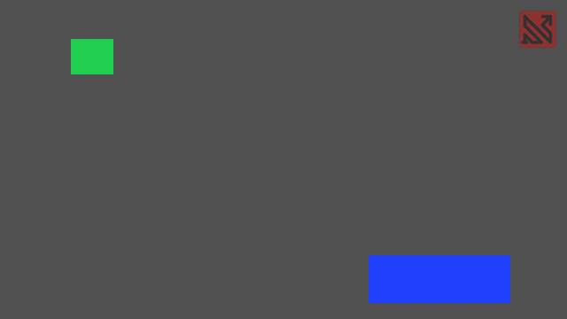
output-maintenance-scheduled-logo-overlap-off.jpg
output-maintenance-scheduled-logo-overlap-on.jpg
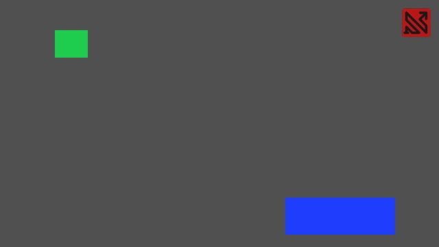